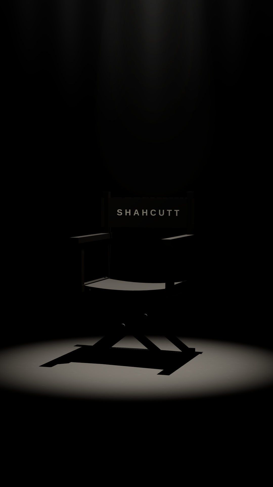

۵ اشتباه تایپوگرافی
فارسی
هوش مصنوعی
۱
۲
۳
۴
۵
هوش مصنوعی
ولی تو
فارسی
رو
بلد نیست
.
بلدی
.
اشتباه ۱
حروف جدا
فارسی
فارسی
.
اشتباه ۲
برعکس
تسرد
درست
.
اشتباه ۳
نیمفاصله
می شه
میشه
.
اشتباه ۴
ی و ک عربی
شيك
شیک
.
اشتباه ۵
عدد انگلیسی
3 روز
۳ روز
.
کامنت کن
تایپ
.
تا چکلیست تایپوگرافی فارسی رو برات بفرستم
قسمت
۳
از ۳